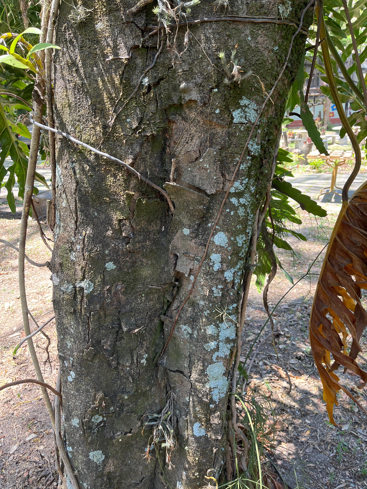

Pau-alecrim
Holocalyx balansae

Informações Botânicas
Nome Científico:
Holocalyx balansae
Família:
Leguminosae
Origem:
Brasil
Descrição:
Árvore de grande porte, de 15 a 25 metros, com tronco curto e sulcado e uma copa densa, arredondada e perene, que fornece uma sombra excelente durante o ano todo. Suas folhas são compostas, de cor verde-escura. A floração ocorre com maior intensidade na primavera (outubro-novembro) e a maturação de seus frutos acontece no verão (dezembro-fevereiro). Sua madeira é pesada, dura e de altíssima durabilidade.Localização no Jardim Usada na arborização urbana e no paisagismo pela beleza de sua copa, que provê ótima sombra. É também uma espécie importante para projetos de reflorestamento de matas densas.
Características Especiais:
- Folhas e Galhos Tóxicos: Um grande alerta: suas folhas e ramos são venenosos e não devem ser ingeridos.
- Madeira de Arco e Flecha: Devido à sua dureza, foi historicamente usada por povos indígenas para a fabricação de arcos e flechas.
- Crescimento Lento:É uma árvore de desenvolvimento lento, tanto na fase de muda quanto no campo, demorando para atingir a idade adulta.
- Nobre da Floresta: É uma espécie de clímax, característica de estágios avançados e sombreados da floresta, e não de áreas abertas.